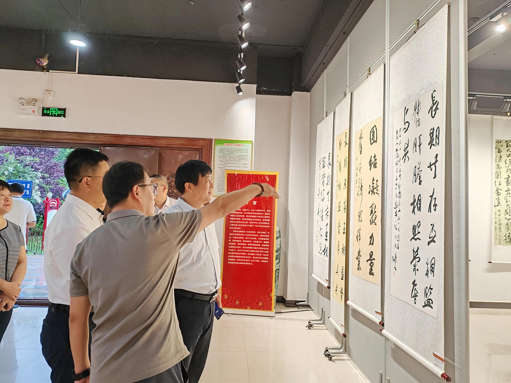

光辉历程

回望75年光辉历程，波澜壮阔的改革开放，推动一个一穷二白、人口众多的东方大国，从“落后时代”到“赶上时代”再到“引领时代”，走出一条通往现代化的全新道路，以崭新姿态屹立于世界舞台。
进入新时代，以习近平同志为核心的党中央以巨大的政治勇气和智慧推进全面深化改革，开创中国特色社会主义事业崭新局面。
正如习近平总书记所指出的：“中国式现代化是在改革开放中不断推进的，也必将在改革开放中开辟广阔前景。”
“改革开放是当代中国最显著的特征、最壮丽的气象”
国庆前夕，龙（岩）龙（川）高铁梅龙段正式开通运营。至此，中国铁路营业总里程突破16万公里，其中高铁营业里程超4.6万公里，稳居世界第一。
75年上下求索，中国共产党引领中国人民开启一场亘古未有的伟大实践，以改革开放的如椽巨笔书写中华民族复兴史上的壮美诗篇。
伟大变革，总是从思想破冰发端。
上世纪70年代末，面对中国与外部世界发展的巨大差异，中国共产党人清醒看到当时存在的体制机制弊端。1978年5月，一篇题为《实践是检验真理的唯一标准》的文章，引发轰轰烈烈的真理标准大讨论，极大促进了思想解放。返回首页